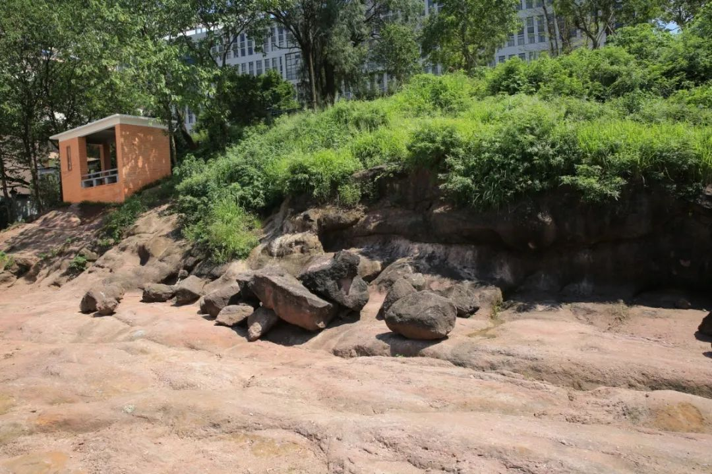
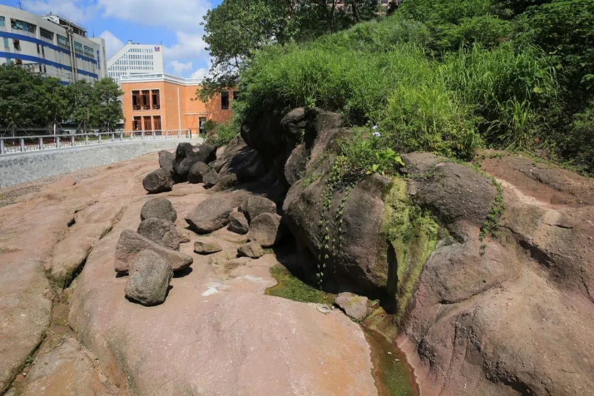
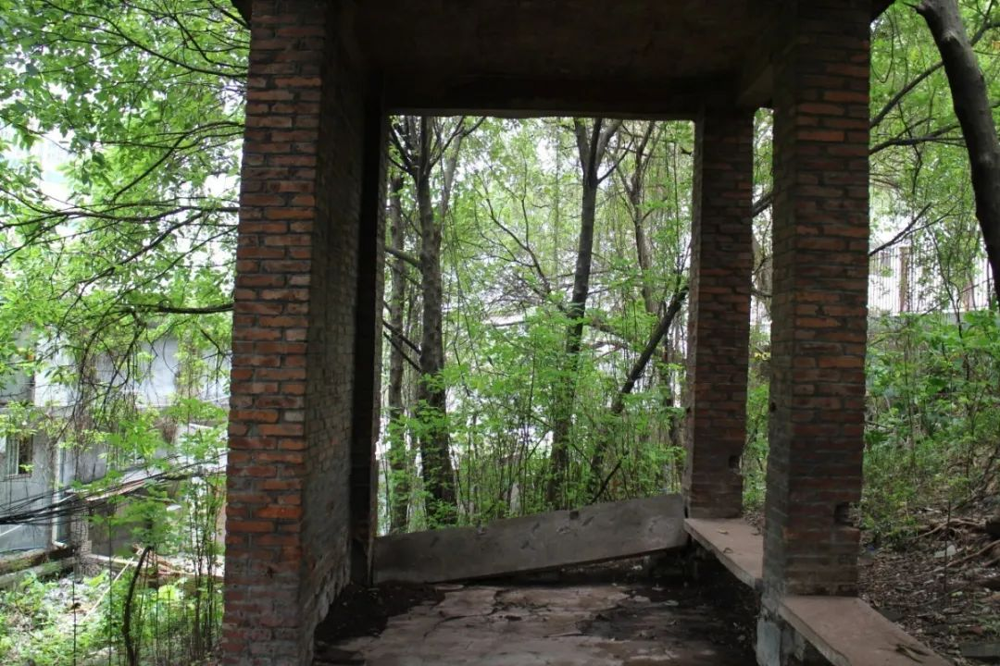
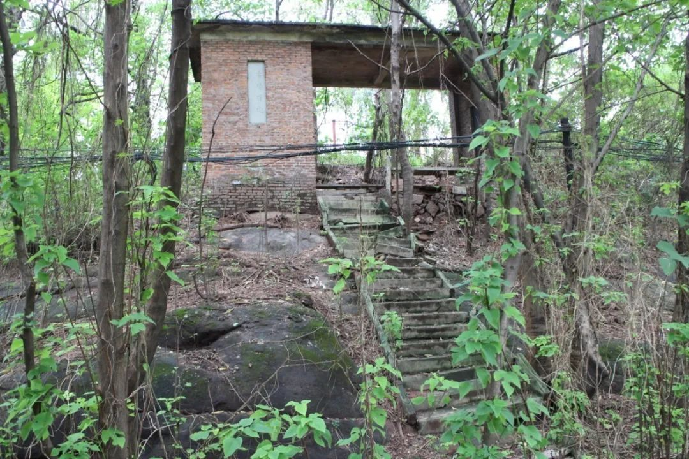
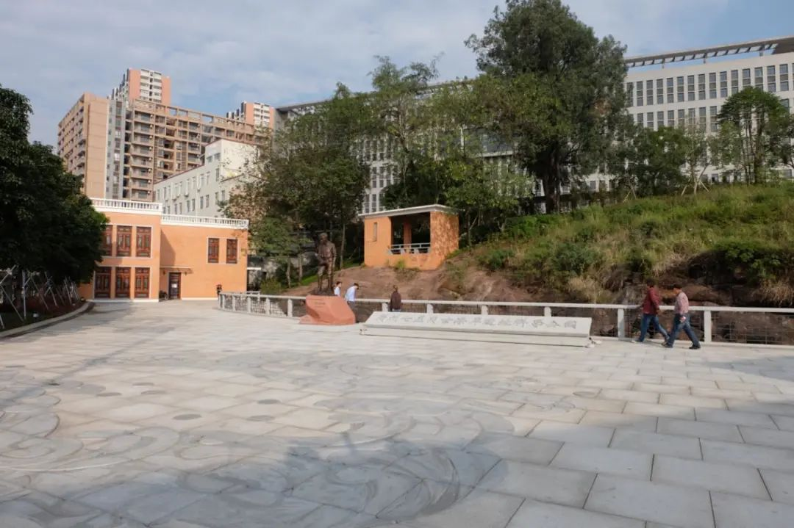
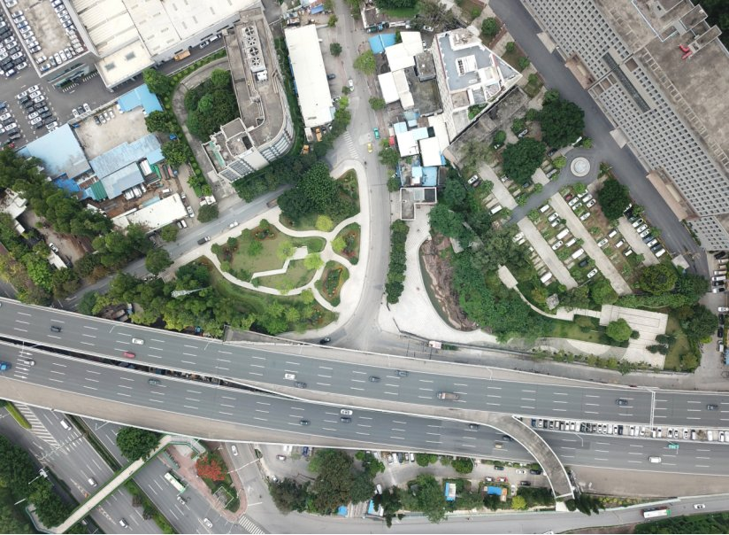

上午看岭南园林，午前读一段六千年前的海岸，午后在老糖厂吃午饭看江景
一条线串起三种完全不同的风景：岭南园林、古海岸遗址、旧糖厂文创园；清早先到里仁洞吃一盘拉肠再出发。全程约 118 公里，三个游览点两个免费、一个门票 18 元。
余荫山房的「四季窗」与孔雀亭旁的簕杜鹃；七星岗同在一处的海蚀崖、海蚀平台、海蚀洞，和纪念亭里的三方手迹碑；紫泥堂的苏式文化街与临江的万吨仓。
11-28 多云、12–25℃、无雨；早晚温差 13℃，每人带一件薄外套。逐段影响与降雨预案见天气影响评估。
按行程顺序排列。只有七星岗配了实景图（花城〔广州日报全媒体〕2020-06-02 报道中的照片，仅作出行参考，以实地为准）；其余三处出行后补实拍。
清早第一站。店在新光快速金山大道西出口边上，下高速即到。地图上没有登记营业时间和电话，到店才知道开没开；没开就走 500 米外的丰江源拉肠（兴业大道西 993 号，07:00–20:30，电话 185-0209-96063）。最近的停车场是里仁洞新村-地上停车场（约 130 米）。
岭南四大名园之一，也是其中唯一基本保存原貌的一座。园地只有三亩，却把亭、堂、楼、榭和山、石、池、桥全装了进去。眼下孔雀亭旁的簕杜鹃开成一片，文昌苑瑞景楼一楼有「丹青寄岁」画展（至 2027-01-10）。咨询 020-34822187。






约六千年前的海岸线就在这里：海蚀崖、海蚀平台、海蚀洞同在一处：崖高约 2 米，平台宽约 6 米、高出今海平面约 1.93 米。这里是世界公认最深入内陆的古海岸遗址。园区只有 1.12 公顷，四周是城市街区，观感像个小公园，价值在「看得懂」。停车在约 40 米外的智通创意工业园-地上停车场（24 小时，收费以现场公示为准）。咨询 020-89440241。
1953 年建成的国营紫坭糖厂改造的文创园，保留着 88 栋旧工业建筑、4 根老烟囱和临江的万吨仓。午餐在园内解决：为食蒸顺德料理（86 栋），人均约 70 元，订位电话 136-3145-3360（地图公示）；饭后沿苏式文化街走到万吨仓看江景。园内有多个停车场，按指示牌停到想去的片区旁。咨询 020-23889900。
两个方案走的是同样的三个点，区别只在「七星岗放在哪」。方案 A 把七星岗排在余荫山房之后、紫泥堂之前，最后一程全程上东新高速，到家更早（推荐）；方案 B 以七星岗收尾，午餐更准点。点选切换，地址栏可分享。
| 出发 | 到达 | 目的地或项目 | 耗时 |
|---|---|---|---|
| 07:30 | 08:10 | 荔湾出发 → 里仁洞（自驾约 30 公里） | 0.7h |
| 08:10 | 09:00 | 里仁洞本地肠粉 · 早餐 | 0.8h |
| 09:00 | 09:15 | → 余荫山房（约 7 公里） | 0.3h |
| 09:15 | 10:45 | 游余荫山房 | 1.5h |
| 10:50 | 11:15 | → 七星岗（约 15–16 公里） | 0.4h |
| 11:15 | 12:00 | 游七星岗古海岸遗址科学公园 | 0.8h |
| 12:00 | 12:40 | → 紫泥堂（约 31 公里） | 0.7h |
| 12:40 | 13:40 | 午餐 · 为食蒸顺德料理 | 1h |
| 13:40 | 14:10 | 紫泥堂散步（苏式文化街—万吨仓） | 0.5h |
| 14:10 | 15:00 | 返程（东新高速约 35 公里） | 0.8h |
约 30 公里，周六早 40–50 分钟；导航「里仁洞本地肠粉」。
下高速即到，建议 08:15 前到。营业时间地图上没有登记，到店若没开，走 500 米外的丰江源拉肠。见① 里仁洞本地肠粉。
11:30 开市、14:00 停业，12:40 前到；建议出发前一晚电话问是否需要订位。见④ 紫泥堂。
苏式文化街（1953 年的办公楼群，黄墙拱券走廊）→ 万吨仓（在外面看江景；二楼平台要爬楼梯，可以不上）。累了进茶馆坐。
东新高速直达，约 35 公里。
| 出发 | 到达 | 目的地或项目 | 耗时 |
|---|---|---|---|
| 07:30 | 08:10 | 荔湾出发 → 里仁洞（自驾约 30 公里） | 0.7h |
| 08:10 | 09:00 | 里仁洞本地肠粉 · 早餐 | 0.8h |
| 09:00 | 09:15 | → 余荫山房（约 7 公里） | 0.3h |
| 09:15 | 10:45 | 游余荫山房 | 1.5h |
| 10:50 | 11:45 | → 紫泥堂（约 28–30 公里） | 0.9h |
| 11:50 | 13:35 | 午餐＋散步 · 紫泥堂 | 1.6h |
| 13:40 | 14:20 | → 七星岗（约 31 公里） | 0.7h |
| 14:20 | 15:05 | 游七星岗古海岸遗址科学公园 | 0.8h |
| 15:10 | 15:50 | 返程（约 19 公里） | 0.7h |
三处地方各有一句值得讲的话：一座三亩地名园的「缩龙成寸」，一段六千年前的海岸线，一座糖厂的前世今生。
背景：园主邬彬 43 岁中举后，用族人奖励建祠堂剩下的地建了这座园子（1867–1871）。它与佛山梁园、东莞可园、顺德清晖园合称「广东四大名园」，是其中唯一基本保存原貌的。
讲给孩子听：
背景：1937 年 5 月 14 日，中山大学教授吴尚时在这里发现了古海岸遗迹。这里的海蚀崖、海蚀平台、海蚀洞约形成于六千年前，是世界公认最深入内陆的古海岸遗址。
讲给孩子听：
个别旧资料把年代写成「几万年前」，以园区碑刻和说明牌为准；金羊网、人民网的报道写的都是「约六千年前」。
背景：1953 年，这里建成广东省国营紫坭糖厂，是「一五」期间我国自行设计建设的第一家大型甘蔗糖厂，曾为广东最大糖厂。2013 年起改造为文化创意园，保留了 88 栋旧工业建筑。
讲给孩子听：
开放时间与票价核实于 2026-11-25（景区官网、海珠区政府网、地图商户信息），以出行当日官方公告为准；核实不到的项如实标注。
| 景点 / 场馆 | 开放时间 | 门票参考 | 备注 |
|---|---|---|---|
| 里仁洞本地肠粉 | 未登记（到店确认） | 四人约 ¥60–70（估算） | 备胎丰江源拉肠 07:00–20:30，电话 185-0209-96063 |
| 余荫山房 | 8:00–18:00（17:00 停止售票、入园） | 18 元；半票 9 元；6 周岁及以下或 1.3 米及以下儿童免票（半票适用对象见表下） | 需公众号预约；020-34822187 |
| 七星岗古海岸遗址科学公园 | 9:00–17:00，周二闭园 | 免费 | 无需预约；020-89440241 |
| 紫泥堂（园区） | 全天开放 | 免费 | 无需预约；020-23889900 |
| 为食蒸·顺德料理 | 11:30–14:00、17:30–21:00 | 人均约 70 元 | 紫泥堂 86 栋；14:00 停业；订位电话 136-3145-3360（地图公示） |
| 工业历史博物馆 | 未查到；周一闭馆 | 免费 | 紫泥堂 A 区 A20 栋；到园先问游客中心 |
预报核实于 2026-11-25，中国天气网与中央气象台两源一致；距出行 3 天，出发前一晚须再查一次临近预报与预警。
多云，12–25℃，微风，无雨——可出行。早晚温差 13℃，每人带一件薄外套，中午可短袖。备用日 11-29（周日）多云 14–23℃。
清早出发：气温低，且前两天有雨、路面可能未干，留神驾驶。余荫山房：无影响。七星岗：全户外、无遮挡，排在午餐前正合适。紫泥堂：散步段可随时缩进茶馆。
下雨：七星岗全户外、紫泥堂基本露天——改走只去余荫山房（园内有廊可避）或顺延到 11-29；雨大就取消。出发前发布雷雨大风、暴雨预警：全程取消户外点，余荫山房、紫泥堂看现场情况。
出发前一晚要办的事、路上遇到情况怎么办、要带什么、大概花多少。